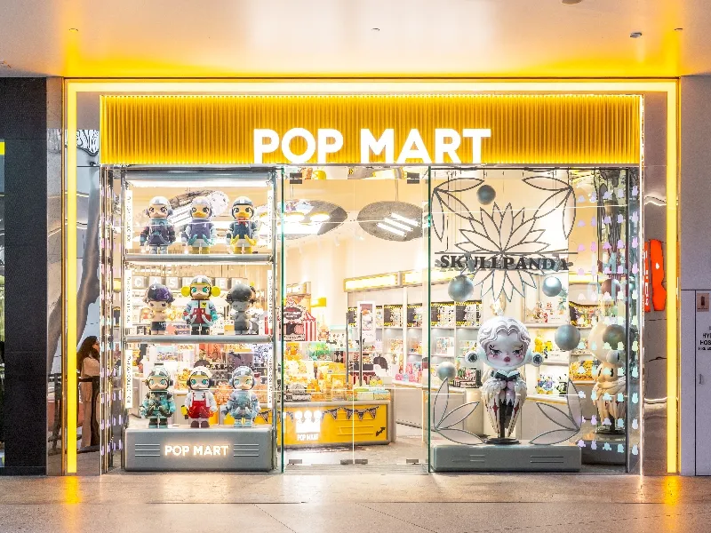
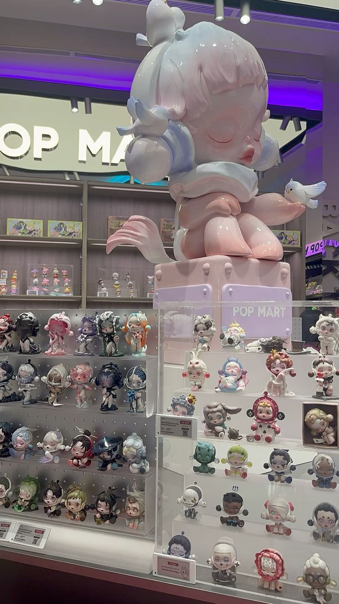
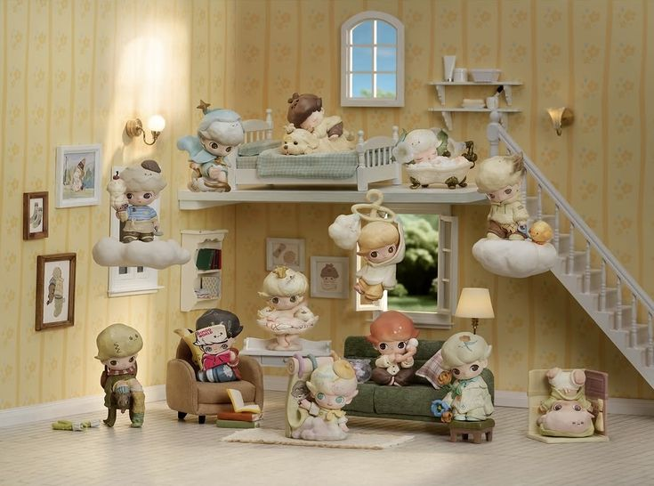
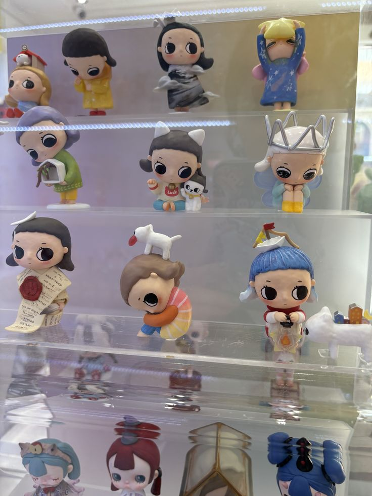

Pop Mart - это китайская компания по производству игрушек, основанная в 2010 году в Пекине предпринимателем Ван Нином (Wang Ning). Изначально бренд начинал как концепт-стор, продающий модные товары, но в 2015 году всё изменилось, когда фигурка Sonny Angel стала вирусным хитом и принесла треть дохода компании. Это подтолкнуло Pop Mart к переходу от розничной торговли к созданию собственной IP-империи. Уже в 2020 году компания провела IPO на Гонконгской фондовой бирже с оценкой в $13 млрд, а к 2024 году её доход превысил 13 млрд юаней ($1.8 млрд), показав рост на 106.9% год к году.




Ключевые особенности:
Blind Box (Слепые коробки): Главная особенность – покупатель не знает, какая именно фигурка ему попадет, пока не откроет запечатанную коробку, что создает элемент сюрприза и азарта.
Коллекционные персонажи: Бренд сотрудничает с художниками для создания уникальных серий (Molly, Labubu, SKULLPANDA, DIMOO), каждая из которых рассказывает свою историю.
Мировая популярность: POP MART стал глобальным феноменом, с магазинами и продавцами в 50+ странах, а их игрушками интересуются как молодежь, так и взрослые.
Миссия: «Разжечь страсть и принести радость», создавая эмоциональную связь через искусство и дизайн.
Продукция: Помимо blind box, выпускает крупные PVC-фигурки, шарнирные куклы (BJD) и аксессуары.